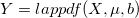
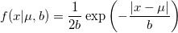
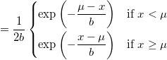

Lappdf
Lappdf-func
Definition
 returns the probability density function of the Laplace distribution with location parameter mu and scale parameter b, evaluated at the values in X.
-

- 
Parameters
- x (input, double)
- mu (input, double)
- location parameter
- b (input, double)
- scale parameter
/math-a73c373ed1072d9d49add37ee0b22203.png "b >0") .
.
See Also
Cauchypdf, exppdf, gampdf, Lognpdf, Normpdf, Poisspdf